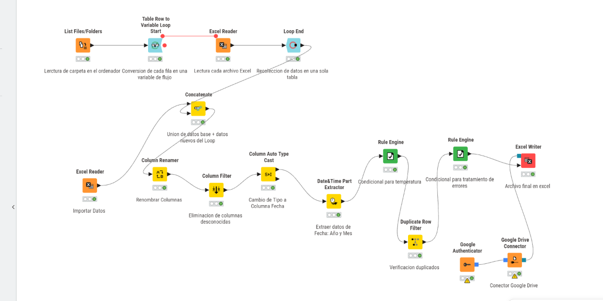

My Projects
KNN Imputation in R
Missing Data Imputation using K-Nearest Neighbors.
5-Fold Cross-Validation and RMSE Evaluation.
View R CodeData Preprocessing in R
Data Cleaning & Feature Engineering
Missing value imputation, one-hot encoding, normalization, standardization, and train-test splitting.
View R CodeSVM - Iris Classification
Supervised Machine Learning in R
Iris species classification using Support Vector Machines with a radial kernel.
Includes model training, feature scaling, confusion matrix evaluation, predictions and decision boundary visualization.
View R Code
KNIME - Data Processing & Automation
ETL & Workflow Automation
Developed a data processing workflow using KNIME Analytics Platform.
Automated Excel file ingestion using loops, data consolidation, column transformations, date extraction, conditional rules, and duplicate detection.
Includes Excel export and Google Drive integration.
Tools: KNIME, Excel, CSV, ETL, Google Drive.
View KNIME WorkflowPower BI - Sales & Business Performance
Interactive Business Intelligence Dashboard
Developed a multi-page Power BI dashboard to analyze sales performance, profitability, product categories, customer segments and shipping operations.
Created KPI indicators to monitor total sales, total profit, profit margin and discounts.
Includes product profit-loss analysis, interactive filters, sales trends and forecasting with confidence intervals.
Tools: Power BI, Data Visualization, Business Intelligence, Sales Analytics, Forecasting.
View Power BI ProjectAbout Me
Investment Banking Associate with a background in Agricultural Economics and Business Analytics.
Experienced in financial operations, data analysis, statistical modeling, and business process improvement.
Interested in data-driven decision-making, financial analysis, predictive modeling, business intelligence, and machine learning.
View My GitHub